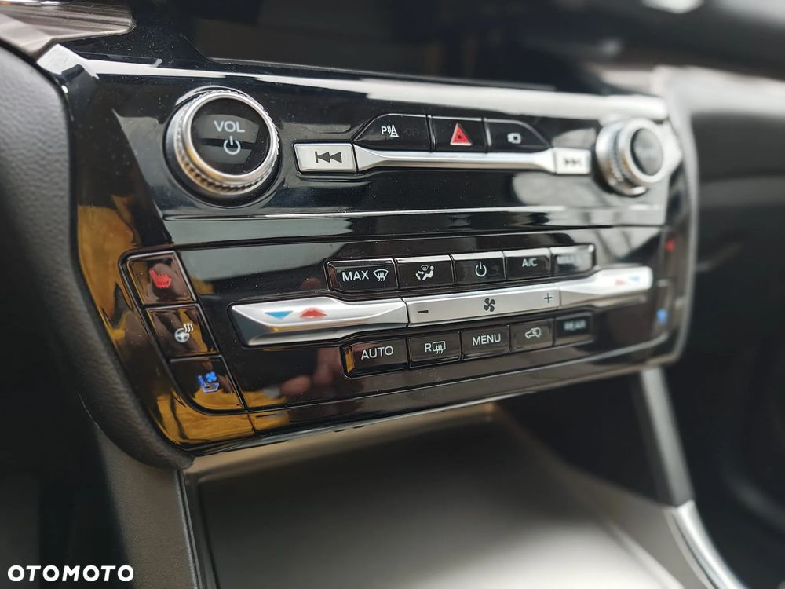
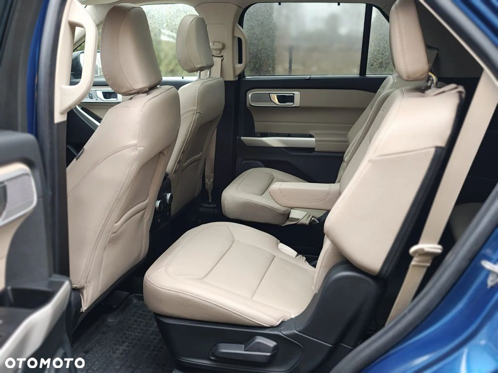
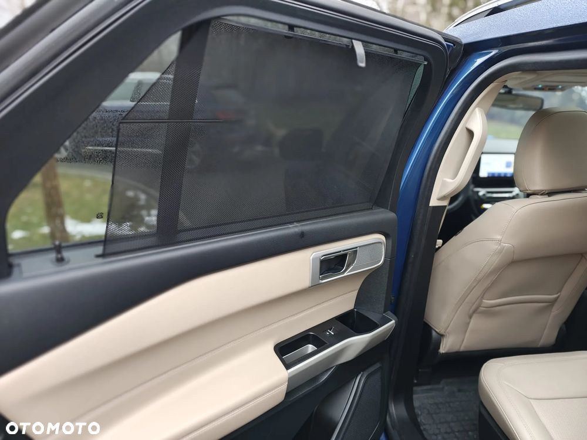
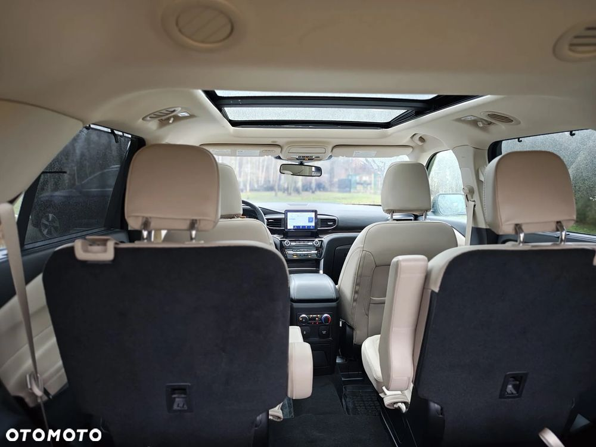

KORNAK MOTORS i KORNAK GARAGE, to dwie nasze marki ściśle ze sobą współpracujące przy realizacji projektów aut Premium, SuperCars, a także tych budowanych na zamówienie (Customowych).
Stawiamy na najwyższą jakość naszych produktów, a samochody, które wyjeżdżają z naszego serwisu są w stanie zbliżonym lub często lepszym od fabrycznego.
2022 Ford Explorer Limited
To luksusowy SUV, który łączy elegancję z wydajnością. Napędzany przez turbodoładowany silnik 2.3, oraz wyposażony w napęd na wszystkie koła (4 × 4), ten model zapewnia nie tylko znakomite osiągi, ale również wszechstronność w różnych warunkach drogowych.
Niebieski kolor nadwozia nadaje pojazdowi nowoczesny wygląd, który jest wzbogacony o przestronne wnętrze z jasną skórzaną tapicerką. Ford Explorer Limited oferuje również zaawansowane technologie multimedialne i bezpieczeństwa, takie jak panoramiczny dach, system audio premium oraz system nawigacji, co podnosi komfort podróży.
Ford Explorer 2022 roku jest prawie nowy, gotowy sprostać różnorodnym potrzebom i oczekiwaniom użytkowników szukających stylowego i funkcjonalnego SUV-a.
!! Auto nie jest hybrydą PLUG-IN. Niestety formularz OTO Moto nie posiada innych opcji wyboru. !!
Dane Techniczne:
Marka: Ford
Model: Explorer Limited
Rok produkcji: 2022
Silnik: 2.3 Turbo
Moc: 285 KM
Napęd: 4x4 (napęd na wszystkie koła)
Przebieg: 16.000 km
Kolor nadwozia: Niebieski
Tapicerka: Jasna skóra Naturalna Perforowana, Wentylowana
Wartość katalogowa: 395.000 PLN
Wyposażenie i Funkcje:
Komfort: Klimatyzacja dwustrefowa, elektrycznie regulowane fotele, podgrzewane i wentylowane fotele, skórzana tapicerka
Technologia: System audio premium, system nawigacji, Apple CarPlay, Android Auto, panoramiczny dach
Bezpieczeństwo: Reflektory LED, adaptacyjny tempomat, system monitorowania martwego pola, czujniki parkowania, kamera 360 stopni
Samochód przed sprzedażą w rękach KORNAK GARAGE, gdzie wykonane będą następujące prace:
- wszystkie wizualne wady lakiernicze zostały usunięte (ryski, przetarcia parkingowe etc. przez co wygląda teraz jak nowy),
- zabezpieczymy lakier powłoką,
- wymienimy wszystkie oleje, uszczelki, filtry powietrza, oleju, klimatyzacje.
Oferujemy gratis promocyjne finansowanie oraz pomoc obniżce składki OC/AC.
Cena samochodu brutto z fakturą VAT 23%
Co wyróżnia naszą ofertę:
-Na auto udzielamy 6-miesięcznej gwarancji i dajemy pełny wgląd w historię auta.
-Pojazd, który oferujemy zawsze jest w stanie perfekcyjnym, nie akceptujemy żadnych skaz czy wad ukrytych.
-Każdy samochód przechodzi u nas pełen audyt składający się z 82 punktów weryfikujących stan auta i nie zostanie wydany szczęśliwemu nabywcy, dopóki wszystkie pozycje nie będą poprawne.
-Każdy pojazd jest zawsze po pełnym przeglądzie serwisowym gdzie oleje, filtry, płyny są wymieniane na nowe, tak by Klient mógł spokojnie przejechać 15 tys. km bez wydatków.
-Customowe modyfikacje czy naprawy realizowane są przez profesjonalistów z KORNAK-GARAGE, którzy z uwagi na specjalizację na co dzień zajmują się naprawą oraz pielęgnacją aut o wartości często przekraczającej 500 tys. zł.
-Każdy samochód to dla nas unikalny projekt, przygotowujemy i dopieszczamy samochody z pasji oraz dla przyjemności, a nie z chęci zysku.
-Oferujemy pełne wsparcie pogwarancyjne dla stałych klientów z rabatem 15% na wszystkie nasze usługi.
-Jesteśmy autoryzowanym partnerem PZU w zakresie napraw jak i zaufanego partnera biznesowego EFL, Millenium LEASING, PKO LEASING.
-W cenie zakupu mamy dla Państwa preferencyjne warunki finansowania
Zapraszamy do zapoznania się z naszą ofertą: https://kornak-motors.eu
